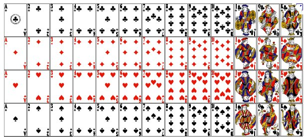
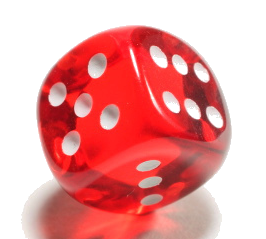

| Choisissez votre langue ! | Choose your language ! |
Le concept d'épreuve aléatoire
The concept of random experiment (trial)
définition 1
Une
'épreuve aléatoire'
est un procédé (matérialisé par un dispositif, un protocole, une expérience parfaitement décrite) destiné à générer, de façon aléatoire à chaque expérimentation, et avec éventuellement répétition, les éléments d'un ensemble connu a priori. Cet ensemble, qui est donc l'ensemble des résultats de l'épreuve (ou de l'expérience), appelés également
'évènements élémentaires'
peut être fini ou infini.
definition 1
A
'random trial'
is a process (embodied by a device, a protocol, a perfectly described experiment) intended to generate, randomly at each experiment, and possibly with repetition, the elements of a set known a priori. This set, which is therefore the set of results of the test (or of the experiment), also called
'elementary events'
can be finite or infinite.
Le qualificatif 'aléatoire' est ici relatif à l'état d'ignorance de l'expérimentateur.
En somme, l'expérimentateur ne sait pas quel sera le résultat de son expérience, mais il connait l'ensemble des possibilités, même si cet ensemble est très grand ou même infini.
La réalité peut être un peu plus complexe comme le montre les exemples caricaturaux qui suivent mais la 'vraie vie' est toujours plus complexe que toutes les modélisations.
En somme, l'expérimentateur ne sait pas quel sera le résultat de son expérience, mais il connait l'ensemble des possibilités, même si cet ensemble est très grand ou même infini.
La réalité peut être un peu plus complexe comme le montre les exemples caricaturaux qui suivent mais la 'vraie vie' est toujours plus complexe que toutes les modélisations.
The qualifier 'random' here relates to the state of ignorance of the experimenter.
In short, the experimenter does not know what the result of his experiment will be, but he knows the set of possibilities, even if this set is very large or even infinite.
Reality can be a bit more complex as shown in the caricatural examples that follow, but 'real life' is always more complex than any modeling.
In short, the experimenter does not know what the result of his experiment will be, but he knows the set of possibilities, even if this set is very large or even infinite.
Reality can be a bit more complex as shown in the caricatural examples that follow, but 'real life' is always more complex than any modeling.
définition 2
L'ensemble des résultats élémentaires se notent souvent U ou Ω et s'appelle
"l'univers"
(univers des possibles).
definition 2
The set of elementary results is often denoted U or Ω and is called
"the sample space"
(alternatively
sample description space
,
possibility space
or
outcome space
).
Quelques exemples
Pile ou face
Le lancer d'une pièce donne deux évènements élémentaires possibles donc un univers fini Ω={P,F}Résultat P : apparition du côté 'PILE' portant la valeur de la piece.
Résultat F : apparition du côté 'FACE'.
Pour simuler un tirage à pile ou face,
passer la souris ou le doigt sur l'image de la main !
Some examples
Heads or tails
Tossing a coin gives two possible elementary events, therefore a finite universe Ω={P,F}Result H: appearance of the 'HEAD' side showing an image symbol of the country.
Result T: appearance of the 'TAIL' side showing the value of the coin.
To simulate a coin toss,
hover with mouse or finger over the image of the hand!
PROTOCOLE:
Pour valider un lancer et garantir le côté aléatoire du résultat
Pour valider un lancer et garantir le côté aléatoire du résultat
- La pièce doit être lancée suffisamment haut.
- On peut s'assurer que le lanceur ne connait pas la position initiale de la pièce dans sa main, en la faisant déposer par une tierce personne.
- Elle doit tourner sur elle-même un minimum de fois.
- On peut exiger un rebond préalable.
- On peut exiger que le lanceur change à chaque fois.
PROTOCOL:
To validate a toss and guarantee the randomness of the result
To validate a toss and guarantee the randomness of the result
- The coin must be thrown high enough.
- We can make sure that the thrower does not know the initial position of the piece in his hand, by having it deposited by a third person.
- It must turn on itself a minimum of times.
- You may require a prior rebound.
- You can require the launcher to change each time.
Lancer d'un dé
Considérons un dé cubique, parfaitement équilibré avec les sommets arrondis pour permettre un roulement facile. Si on jette le dé sur une surface plane avec une énergie suffisante, il finit par s'immobilier en montrant sa face supérieure.Nous avons donc là à nouveau un univers fini Ω={1,2,3,4,5,6} si on identifie l'entier n avec l'évènement élémentaire 'apparition de la face portant le numéro n'.
Pour simuler le lancer d'un dé
passer la souris ou le doigt sur l'image de la main !
Rolling a dice
Consider a cubic die, perfectly balanced with the tops rounded to allow for easy rolling. If the die is thrown on a flat surface with sufficient energy, it eventually becomes real estate showing its upper face.We therefore have here again a finite universe Ω={1,2,3,4,5,6} if we identify the integer n with the elementary event 'appearance of the face bearing the number n'.
To simulate throwing a dice, hover the mouse or finger over the image of the hand!

PROTOCOLE:
Pour valider un lancer et garantir le côté aléatoire du résultat
Pour valider un lancer et garantir le côté aléatoire du résultat
- On peut exiger que le dé soit préalablement agité dans un godet plutôt que tenu à la main.
- On peut exiger que le lanceur change à chaque fois.
- On peut exiger une vitesse initiale minimale.
- On peut exiger une distance de roulement minimale.
PROTOCOL:
To validate a roll and guarantee the randomness of the result
To validate a roll and guarantee the randomness of the result
- The die may be required to be shaken beforehand in a cup rather than held by hand.
- You can require the launcher to change each time.
- A minimum initial velocity may be required.
- A minimum rolling distance may be required.
Tirage d'une carte
Un jeu de bridge se compose de 52 cartes voir (détail ci-dessous). Le tirage d'une carte au hasard génère donc un univers fini Ω à 52 éléments pouvant être codés avec deux caractères ('DP'=Dame de pique, 'AC'=As de coeur, 'XK'=10 de carreau', '2T'= 2 de trèfle, etc...). Les quatre couleurs sont :- Trèfle
- Carreau
- Coeur
- Pique
- As
- Roi
- Dame
- Valet
- 10
- 9
- 8
- 7
- 6
- 5
- 4
- 3
- 2
Drawing a card
A deck of bridge consists of 52 cards see (detail below). Drawing a card at random therefore generates a finite space Ω 52 elements that can be coded with two characters ('QS'=Queen of spades, 'AH'=Ace of hearts, 'XD'=10 of diamonds', '2C'= 2 of clubs, etc...). The four suits are:- Club
- Diamond
- Heart
- Spade
- Ace
- King
- Queen
- Jack
- 10
- 9
- 8
- 7
- 6
- 5
- 4
- 3
- 2

Les cartes les plus fortes As-Rois-Dames-Valets et 10 s'appellent des 'honneurs'.
Les honneurs se voient attribuer des points reflétant leur force :
Les honneurs se voient attribuer des points reflétant leur force :
- As: 4 points
- Roi: 3 points
- Dame: 2 points
- Valet: 1 point
- Dix : 0 point
The highest cards Aces-Kings-Queens-Jacks and 10s are called 'honors'.
Honors are awarded points reflecting their strength:
Honors are awarded points reflecting their strength:
- Ace: 4 points
- King: 3 points
- Queen: 2 points
- Jack: 1 point
- Ten: 0 points

PROTOCOLE:
Pour valider un tirage et garantir le côté aléatoire du résultat
Pour valider un tirage et garantir le côté aléatoire du résultat
- La composition du jeu doit être soigneusement vérifiée au départ.
- Les cartes doivent être neuves lisses et indistinguables au verso.
- Le jeu doit être à chaque fois, longuement battu, si possible par des personnes différentes.
- Le tirage doit être effectué si possible par des personnes différentes.
PROTOCOL:
To validate a draw and guarantee the randomness of the result
To validate a draw and guarantee the randomness of the result
- The composition of the game should be carefully checked at the start.
- Cards must be new, smooth and indistinguishable on the back.
- The game must be shuffled each time, for a long time, if possible by different people.
- The draw should be done by different people if possible.
Autres exemples
Le choix 'au hasard' d'un individu dans une population (revoir les concepts de base de la ) constitue une épreuve aléatoire.Dans une population diverse et nombreuse le protocole risque d'être complexe.
- Si la population est urbaine à 80% et rurale à 20% il faudra commencer par tirer un entier aléatoire entre 1 et 10. Si le tirage donne 1 ou 2 on le choisira en zone rurale, sinon en zone urbaine.
- Si le nombfre des hommes est égal à celui des femmes on pourra lancer une pièce pour savoir si on prend un homme ou une femme.
- Il faudra ensuite faire un test pour choisir une tranche d'âge en fonction de la pyramide des âges.
- Faire un test sur le niveau de revenus, etc..
- Choisir le département ou la province d'habitation en fonction de la répartition des populations
- etc., etc.
Exemple d'expérience à univers théoriquement infini
Définissons l'expérience 'géométrique' suivante : Tirage d'un point dans un carré de côté 1.Le résultat est un couple de réels disons (x,y) avec (par exemple) 0 ≤ x ≤ 1 et 0 ≤ y ≤ 1.
Ω est donc un ensemble ayant la puissance du continu.
Voici une applet simulant cette expérience.
Other examples
The 'random' choice of an individual in a population (review the basic concepts of ) is a random experiment.In a diverse and large population, the protocol may be complex.
- If the population is 80% urban and 20% rural, you will have to start by drawing a random integer between 1 and 10. If the draw gives 1 or 2, it will be chosen in a rural area, otherwise in an urban area.
- If the number of men is equal to that of women, we can toss a coin to see if we take a man or a woman.
- You will then have to do a test to choose an age group based on the age pyramid.
- Test on income level, etc.
- Choose the department or province of residence according to the distribution of populations
- etc., etc.
Example of a theoretically infinite space experiment
Let's define the following 'geometric' experiment: Draw a point in a square of side 1.The result is a pair of real numbers say (x,y) with (for example) 0 ≤ x ≤ 1 and 0 ≤ y ≤ 1.
Ω is therefore a set having the power of the continuum.
Here is an applet simulating this experiment.
Cliquez n'importe où sur la fenêtre !
Click anywhere on the window !
Remarque importante sur ce type d'épreuve
La simulation ci-dessus a étée réalisée au moyen d'un point dont les cordonnées sont x(M)=Math.random() y(M)=Math.random().La fonction Math.random() est une fonction interne du système (elle-même empruntée au langage JavaScript), dont nous savons seulement qu'elle renvoie une variable de type 'double' (réel double précision) entre 0 et 1.
Nous avons ici demandé en option d'affichage le nombre maximal de décimales autorisé soit 15. Mais de fait, les valeurs retournées par la fonction random() sont en nombre fini, même si ce nombre est très grand.
Un nombre réel, considéré comme un contient une information infinie et l'expérience décrite (choix aléatoire d'un couple de réels) est tout simplement impossible à réaliser ni physiquement ni avec un calculateur-simulateur.
Il n'en reste pas moins que nous aurons besoin de ce concept d'univers des possibles infini dénombrable ou continu. L'utilisation du calcul intégral permet en effet des calculs plus simples que des calculs finis portant sur de très grandes quantités de variables.
De la théorie à la pratique
Les imprévus
Dans le modèle du tirage à pile ou face ou du lancer du dé, des évènements tels que ceux décrits ci-après sont considérés comme impossibles. Ils se produisent quand même quelquefois.On peut les éliminer en considérant l'expérience comme 'non valide'.
Important note on this type of test
The above simulation was performed using a point whose coordinates are x(M)=Math.random() y(M)=Math.random().The Math.random() function is an internal function of the system (itself borrowed from the JavaScript language), which we only know returns a variable of type 'double' (double precision real) between 0 and 1.
We have asked here as a display option for the maximum number of decimal places authorized, i.e. 15. But in fact, the values returned by the random() function are a finite number, even if this number is very large.
A real number, considered a contains infinite information and the experiment described (random choice of a couple of real numbers) is simply impossible to perform either physically or with a calculator-simulator.
The fact remains that we will need this concept of a countably infinite or continuous universe of possibilities. The use of integral calculus indeed allows simpler calculations than finite calculations relating to very large quantities of variables.
From theory to practice
The unexpected
In the coin toss or die roll model, events such as those described below are considered impossible. They still happen sometimes.They can be eliminated by considering the experience as 'invalid'.
|
Pièce sur tranche
Coin on slice
|

|
|
Dé 'cassé'
Broken dice
|
|  |
le coût du hasard
Nous avons vu que plus nous voulons assurer le côté aléatoire du résultat d'une expérience et plus nous devons renforcer le protocole.Cela est vrai pour les expériences physiques comme pour les simulations par ordinateur. Nous verrons par la suite certains procédés utilisés de façon courante pour de telles simulations. Aucune n'est parfaite et nous devons mélanger de nombreuses techniques pour assurer un côté vraiment aléatoire, si tant est que cette notion existe vraiment.
Tout cela pour dire que la production d'un 'bon' nombre aléatoire peut être coûteuse en temps de calcul.
Cette remarque n'aurait guère d'importance si les simulateurs, pour vérifier certaines lois ne devaient pas simuler la répétition d'un très grand nombre d'épreuves aléatoires.
Note sur les simulations de cette page
Le lecteur pourra par une répétition de ces simulations se persuader qu'il s'agit bien d'épreuves 'aléatoires'.De fait il n'en est rien dans la mesure où il est fait appel à des fonctions aléatoires prédéfinies des langages de programmation utilisés.
Mais il se trouve que l'auteur et le lecteur se trouvent dans le même état d'ignorance quand au processus utilisé.
Par exemple pour les gifs animés nous utilisons un code javascript du genre :
function alea (m,M)
{
var d=M-m;
var r=Math.random();
r*=100;
r=parseInt(r);
r=m+r%d;
return r;
}
Nous pouvons donc estimer qu'il s'agit de hasard, avec la définition que nous en avons donnée dans .
the cost of randomness
We have seen that the more we want to ensure the randomness of the outcome of an experiment, the more we must strengthen the protocol.This is true for physical experiments as well as computer simulations. We will see later some processes commonly used for such simulations. None is perfect and we have to mix many techniques to ensure a truly random feature, if such a notion really exists.
All this to say that producing a 'good' random number can be computationally expensive.
This remark would be of little importance if the simulators, in order to verify certain laws, did not have to simulate the repetition of a very large number of random tests.
Note on the simulations of this page
The reader will be able by repeating these simulations to convince himself that they are indeed 'random' tests.In fact, this is not the case insofar as predefined random functions of the programming languages are used.
But it turns out that the author and the reader are in the same state of ignorance as to the process used.
For example for animated gifs we use a javascript code like:
function random (m,M)
{
var d=M-m;
var r=Math.random();
r*=100;
r=parseInt(r);
r=m+r%d;
return r;
}
We can therefore consider that it is a matter of chance, with the definition that we have given in .
Epreuves répétées ou parallèles, univers produit
On suppose maintenant qu'on a défini deux épreuves aléatoires E1 et E2 ayant des univers des possibles respectifs Ω1 et Ω2.On suppose qu'on effectue E1 puis E2 de manières totalement indépendantes (le résultat de E1 n'affectant pas le protocole de E2).
Repeated or parallel tests, product space
We now suppose that we have defined two random trials E1 and E2 having respective possibility spaces Ω1 and Ω< sub>2 .We assume that we perform E1 then E2 in totally independent ways (the result of E1 does not affect the protocol of E2).
définition 3
Le résultat de cette expérience combinée pourra donc s'exprimer sous la forme d'un couple (ω1, ω2) élément d'un Ω1×Ω2 appelé
'univers produit'
. Cette remarque reste vraie quand E2=E1, l'univers devient alors Ω1 2.
definition 3
The result of this combined experiment can therefore be expressed in the form of a pair (ω1, ω2) element of an Ω1×Ω2 called
'product space'
. This remark remains true when E2=E1, the universe then becomes Ω1 2.
Evidemment, rien n'empêche de considérer plus de deux expériences, le résultat de trois lancers successifs de la même pièce pourra être noté par exemple (P,F,P). Il y a alors 23=8 résultats possibles.
Obviously, nothing prevents to consider more than two experiments, the result of three successive throws of the same part could be noted for example (P, F, P). There are then 23=8 possible outcomes.
Le coin de Python
Voici un petit programme de démonstration des fonctions élémentaires du module 'random' du langage Python :Python's Corner
Here is a small demonstration program of the elementary functions of the 'random' module of the Python language:
Le coin de Julia
Julia's corner
Le coin du C
The corner of C
|
Création Gilles Dubois - licence CC-BY-SA
Created by Gilles Dubois - licence CC-BY-SA
|
Septembre 2023
September 2023
|
Version mobile Jquery
Mobile Jquery version
|
|